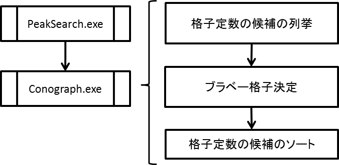
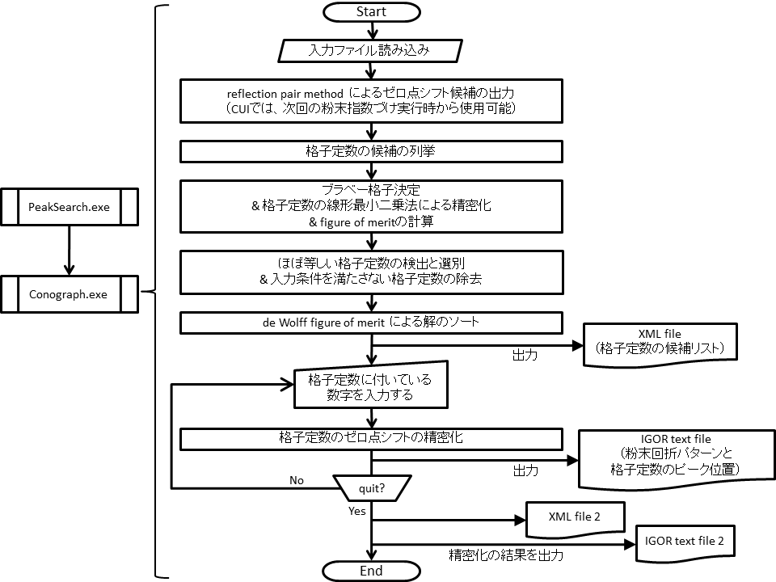

Conograph CUI プログラムの操作説明書
[English / Japanese]
Conograph GUI テストバージョンの配布をこちらより開始しました(4/26/2013)。
以下では、オープンソースの粉末指数づけプログラム Conogaph CUI Version 0.99（download page@sourceforge.jp）について簡単に説明します。
Conograph GUI は現在開発中です (2013/3/2)。
Conograph は粉末指数づけの新しい数学的手法を採用しており、現時点でその手法を紹介している文献に、[2]と[3]があります。

図 1: Conograph による粉末指数づけの３つの主要ステージ
|
Conograph は中性子飛行時間法を含む任意の粉末回折データに対し、比較的短時間で解の徹底探索を行うことができます。
ピークサーチ実行後に行われる粉末指数づけは、図1の3つのステージに大別することができます。
Conograph は全てのブラベー格子、空間群、消滅則に共通する解の列挙手法を採用しているため、ブラベー格子決定が必要になります。
得られた格子定数は入力されたピーク位置の観測誤差から波及する誤差をある程度含むため、
誤差に安定なブラベー格子決定手法を新たに開発しました [3]。
メモリ使用量優先探索 (regular search) を選択した場合、Conograph が準備している探索パラメータから特に大きな変更が行われなければ、全てのステージの実行は約10分程度で終了します。
速さ優先探索 (quick search) では、約5分以内に全ての処理が終了します。
(ただし、i7 CPU (3.2 GHz, 8スレッド)を使用した結果で、ご使用のパソコンによってはもっと時間がかかる場合があります。)
初めて Conograph を使用する際は、難しいケースでも入力する探索パラメータの変更の必要がほとんどない「メモリ使用量優先探索」を選択することをお勧めしています。ただし、「速さ優先探索」でも、ユニットセルが小さいまたは対称性が高いといった簡単なケースでは、
入力パラメータの変更が必要ないことが多いです。
「速さ優先探索」と「メモリ使用量優先探索」の違いは、ここでもう少し詳しく説明しています。
NEWS
- 2016/9/7
-
- 底心格子に関する出力形式に関する誤りを訂正しました。
FAQ
- Conograph を実行する
- 同プログラムを実行するには、以下の３つの入力ファイルを準備する必要があります。
(付属の "sample" フォルダに例があります。)
- "*.inp.xml"：計算パラメータの入力ファイル (例),
- "cntl.inp.xml" ： "*.inp.xml"を含む入出力ファイル名を指定するファイル (例),
- IGOR テキストファイル: 粉末回折パターン (X, Y 座標と Y 座標の誤差) と以下のピークの情報を含むファイル (例。このファイルは付属のピークサーチプログラムからも出力されます)
- ピーク位置 (2θ、time-of-flight、または d 値)、
- ピーク高さ (グラフ表示にのみ使用されます)、
- ピーク半値幅 (ピーク位置の誤差を推定するために使用します),
- 各ピークについて、指数づけおよび figure of merit の計算に使用しない/するを指定するための 0/1 フラグ。
- "sample"フォルダの中の一つのフォルダをコピーし、
コピー先のフォルダ内の二つのXMLファイルの中身とファイル名"*.inp.xml"、IGOR テキストファイルの 0/1 フラグを適宜修正してください。
ファイル名"*.inp.xml"を変更した際は、"cntl.inp"のファイル名も併せて修正する必要があります。
- コマンドプロンプト、またはお使いのOSのターミナルウィンドウを立ち上げ、
上で変更した"cntl.inp"と同じフォルダにカレントフォルダを移動してください。
- "Conograph.exe"の絶対パスをコマンドラインから入力し、Conographwを実行します。
- CUI は以下のファイルを出力し、入力待ち状態に入ります:
- 格子定数のリストを含む XML ファイル（六方晶の例）。
XML ファイルの最上部には、各々の figure of merit について最も良い値を得た格子定数がブラベー格子ごとに表示されます。そのすぐ下に、
得られた全ての格子定数の中で最も良い de Wolff figure of merit [4] の値を得た格子定数が表示されます。
- 実行後に格子定数とゼロ点シフトを精密化する
- 出力 XML ファイルの中に表示されている格子定数は、"0403003"のような数字が付いています。
コマンドラインからその数字を入力すると、該当の格子定数とゼロ点シフトが精密化された後、以下の情報を含む IGOR テキストファイルが出力されます。(例):
- 入力 IGOR text file に含まれる情報のコピー、
- 指定した格子定数が与えるピーク位置、
- 指定した格子定数とブラベー格子。
数字は何度でも入力できます。Conograph を終了させるには "quit" と入力してください。終了時に以下のファイルが出力されます:
- XML ファイル: 精密化された各格子定数とゼロ点シフトの情報を記載したもの (例)、
- IGOR テキストファイル: 精密化の間に出力された IGOR テキストファイルを一つにまとめたもの (例)。
まずは「ピーク高さを基準に回折ピークを出来るだけ一様に拾うようにする」ことをお勧めしています。
（Conograph付属のピークサーチプログラムを用いて、そのようなピークサーチ結果を得るためのパラメータの設定方法は付属の取扱説明書の中で紹介しています。）
どの回折ピークを組み合わせればよいかはConographの列挙アルゴリズムによって比較的短時間の間に判定されます。根拠のある事前情報をお持ちであれば別ですが、そうではない場合、回折ピークの選別を行うことや重畳ピークを人為的に除外することで、入力情報の質を落とすことは避けた方がよいです。
ソフトウェア IGOR Pro をお持ちであれば、CUIを用いた解析もそれほど面倒ではありません。
以下では、GUIとの違いを説明します。
-
GUI上ではピークサーチも実行できます。
-
GUI 起動時に各パラメータの推奨値がテキストボックスに自動でセットされます。
-
GUI起動時には
recommended values are automatically set in the text boxes for respective input parameters.
-
GUIでは、粉末回折パターンと各格子定数に対して計算されるピーク位置の比較を、より容易に高い自由度の下で行うことが出来ます。
-
GUIでは、de Wolff figure of merit 以外の基準を用いて解のソートを行うことが出来ます。
-
CUIでは一連の手続きとして実行している以下の機能を、
GUIでは独立に実行することが出来ますので、計算のやり直しに要するコストが小さくなります。>
- 指数づけ実行前に行う、reflection pair method [1]によるゼロ点シフト Δ2θ の推定
(CUI使用時は、解析初期に画面上にいくつかの候補値が出力されます。)
- 解のソートに使用する de Wolff figure of merit Mnの計算に用いる n の推定
(dominant zone と呼ばれる問題が生じている場合、n = 20以上の値を使用する必要があります。)
CUIでは、上記の推定値を使用する際、プログラムを一度終了させる必要があります。
特に a. について、
正しい値が Δ2θ = 0.195° と非常に大きなケースでも、
Conograph からは十分な結果が得られており、
多くのケースで Δ2θ = 0 を使用し、指数づけ後の精密化を行えば十分と考えられることから、CUIはこのような簡易な実装になっています。
図2 は CUI のフローチャートです:

図2: CUIのフローチャート
(クリックすると大きな図が見られます。)
コード改善のために、疑わしい事例を見つけられましたら、以下のアドレスまでご連絡頂けると助かります。
その際、"LOG_CONOGRAPH.txt"を含む全ての入出力ファイルをご添付ください。
- conograph-bugs (at) ml.post.kek.jp
Conograph を用いて得られた研究成果を発表される際には、以下の文献を引用して頂けるようお願いいたします（Conographに関する原著論文は現在査読中です (2013/2/24)）。
Conograph の継続開発のための予算獲得にご協力ください。
- R. Oishi, M. Yonemura, T. Ishigaki, A. Hoshikawa, K. Mori, T. Morishima, S. Torii, T. Kamiyama,
"New approach to indexing method of powder diffraction patterns using topographs",
Zeitschrift für Kristallographie Supplements 30 (2009), pp.15--20.
本プログラムのソースコードは、MITライセンスの下、web上(Conographプロジェクトのリポジトリリスト)で公開しています（2013/3/2現在）。
Conograph projectのために粉末回折データを提供頂いた方々に感謝します。
C. Dong, F. Wu, H. Chen,
"Correction of zero shift in powder diffraction patterns using the reflection-pair method", J. Appl. Cryst., 32, pp. 850-853 (1999).
R. Oishi-Tomiyasu,
"Distribution rules of crystallographic systematic absences on the Conway topograph and their application to powder auto-indexing", preprint.
R. Oishi-Tomiyasu,
"Rapid Bravais-lattice determination algorithm for lattice constants containing large observation errors", Acta Cryst. A, 68, pp. 525-535 (2012).
P. M. de Wolff,
"A simplified criterion for the reliability of a powder pattern indexing", J. Appl. Cryst., 1, pp. 108-113 (1968).
［Back to top]